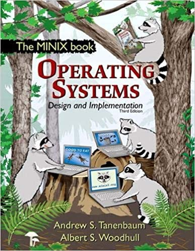

Compilation Operating System
The minimum Operable System and a Minimum Viable Audience

For implementing a Compilation as service you could go with a Minimum Operable System (MOS) that is made of a Linux distribution with a compilation system installed and a compilation task dispatching server that will direct the compilation request to each compilation server but the Efficient Operable system (EOS) is to build what I call a Compilation Operating System, an operating system purposefully developed for compiling code because else than the network module all other components of the operating system that you used with your MOS are useless for code compilation. With your EOS you will save storage and memory space and optimize computing power because all that will be running on the bare metal or virtual server that hosts your System will be about compilation only. This paragraph was about telling a bit about how you also could implement like me this Compilation as Service that I have been writing about in this article for the sake of sharing and discussion like how trying to discuss and share this idea around me.
For example, two days ago, I have been talking with a professional of the tech industry about this new king of SaaS that could be called CaaS if this acronym isn't already used but his concern was that this market was in the hands of cloud providers like Amazon Cloud, Microsoft Azure, and Google Compute. His feedback was telling that there is no room to go after a share of the cloud market because of the monopolistic power of these three providers and the cost of acquiring and maintaining a data center. His concerns are sincerely true for one who is not aware of how a business model can be unbundled and customized to a specific set of audience that is a minimum viable audience and who knows maybe with this minimum viable audience and its small market size it could be possible to jump upmarket like how mini-mills did with the integrated steel plants
I just came to receive mail from one element of this minimum viable audience which is interviewCake and this mail reminded me of the lack of effort that has been spent the last decades improving email clients by adding for free some features that could improve the email user experience like converting the date and time to the timezone from which were are consuming the email. With the recent rise of remote working, this conversion of time and date according to the end-user location is even critical for other platforms. Reading the emails of interviewCake highlighted to me this need of exposing this Compilation Service to Emailing system because users of interview Cake could just reply to the email they got with the code solution they have implemented for the Compilation Server that runs this Compilation Operating system that I am writing about to compile it and return the result by sending a mail response to the interviewCake user. Then I say thank you to interviewCake for showing this use case and thank you again because you offered me a year ago free access to your service and I hope that this Compilation Service will be soon ready and that I will in turn give you free access to it.
The paragraph above shows that when we focus on a narrow audience we find use cases that we could address and these use cases are rarely addressed by the leaders of the market because customization is expensive and hard to manage for a big company or startup that seeking standardization, scale, and volume.
For the MOS of this Compilation as a service System MINIX is probably a good distribution to start with because it is designed with a microkernel architecture by its conception Tanenbaum and because it is very highly fault-tolerant. But the next step for me is to see if GCC and G++ are perfectly operable in the last version of Minix because sincerely I am a real advocate of this distribution but not so much a user of it nor one of its networks of experts and contributors. Supporting this distribution because most of the things I learned about Operating System Architecture and Design, I learned it from this Book.
